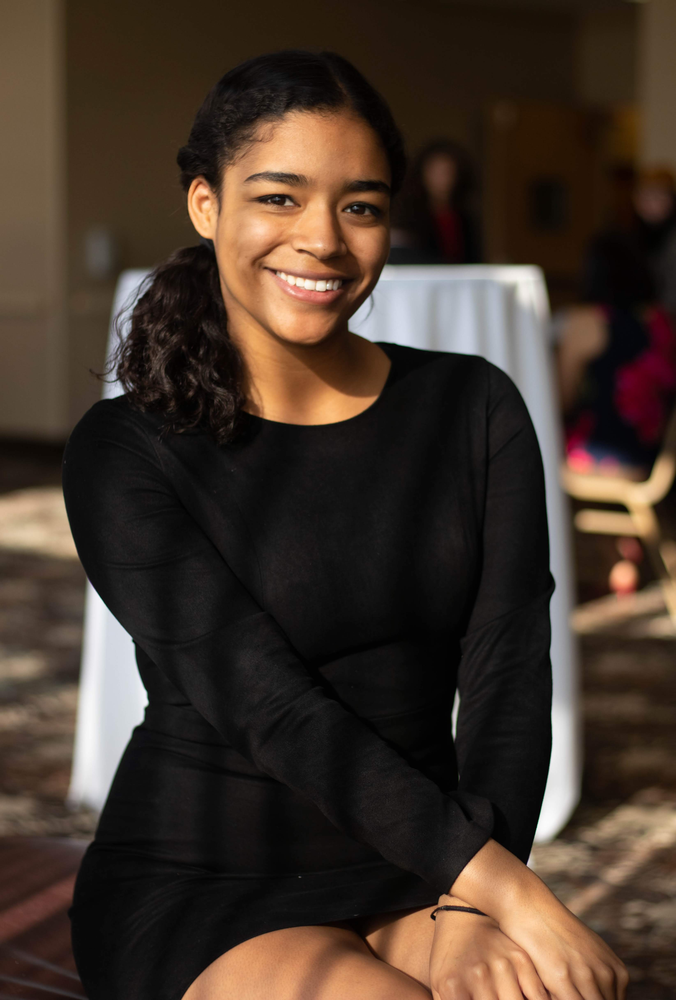

My name is Anastasia Marks. I'm a TEST TEST1 The Washington Post. There, I edit daily print and digital copy and collaborate with reporters and editors on longform special projects including data and visuals.
Before, I was Podcast Editor of The Diamondback, the independent student newspaper at the University of Maryland. I produced, edited and hosted a news and features podcast that I helped to create, Offbeat.
I graduated from the Unviersity of Maryland, College Park with degrees in Journalism and Government & Politics.
I was born and raised in Southern California, so my favorite thing to do is go to the beach, spend time outside in the sunshine and scour cities for the best Mexican food and coffee shops around!